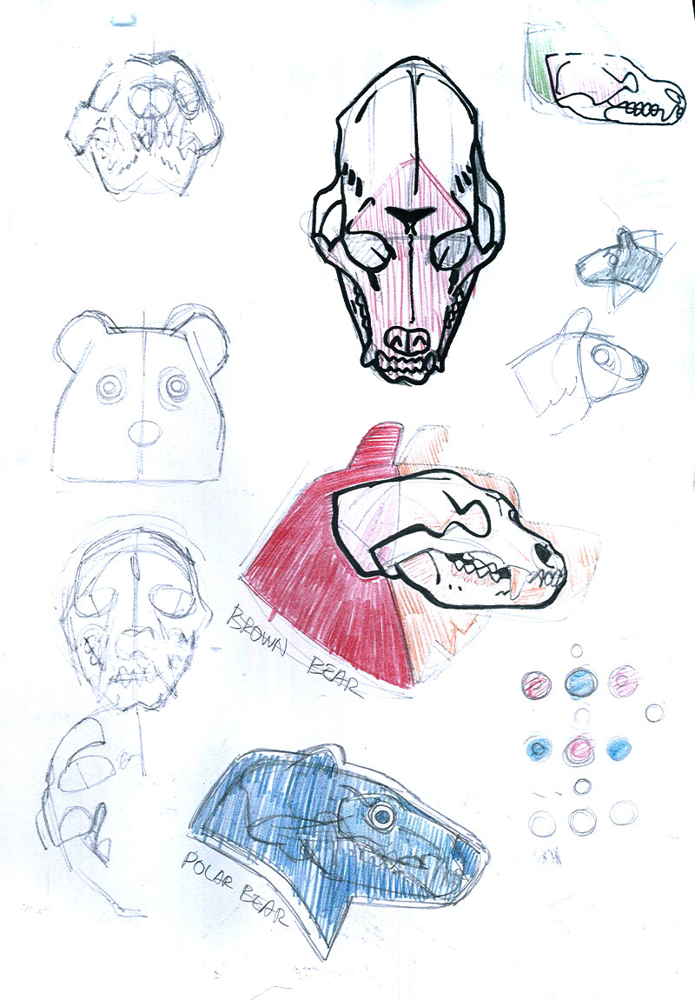
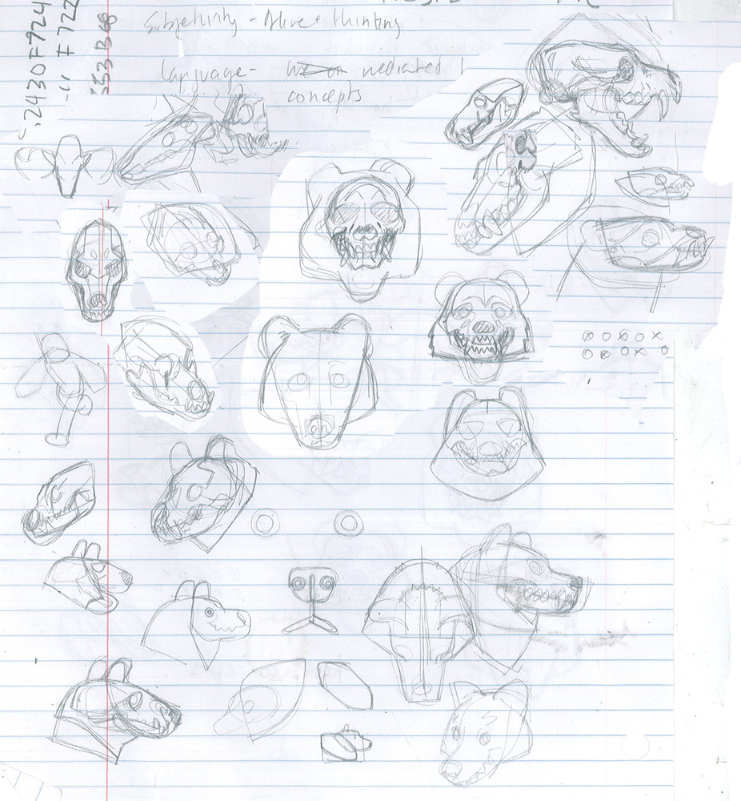

Bear Skulls/2013
On a visit to the Walters Art Museum, a display showcasing a polar bear and brown bear skull side by side caught my attention. The polar bear's skull was so smooth and streamlined compared to the lumpy defined brow of its southern cousin. I did some quick studies which became the inspiration for this pattern.
The skulls held my interest and later I would riff on them extensively, many of the doodles leaning iconic. Eventually I arrived at the elements for the final pattern.On site studies.

